Мастерская изобретателя
Тёплая мастерская: дерево, бумага, медь и карандашные пометки.
3D: Low-poly с мягким toon-освещением: дерево, медь, ткань, тёплый свет лампы.
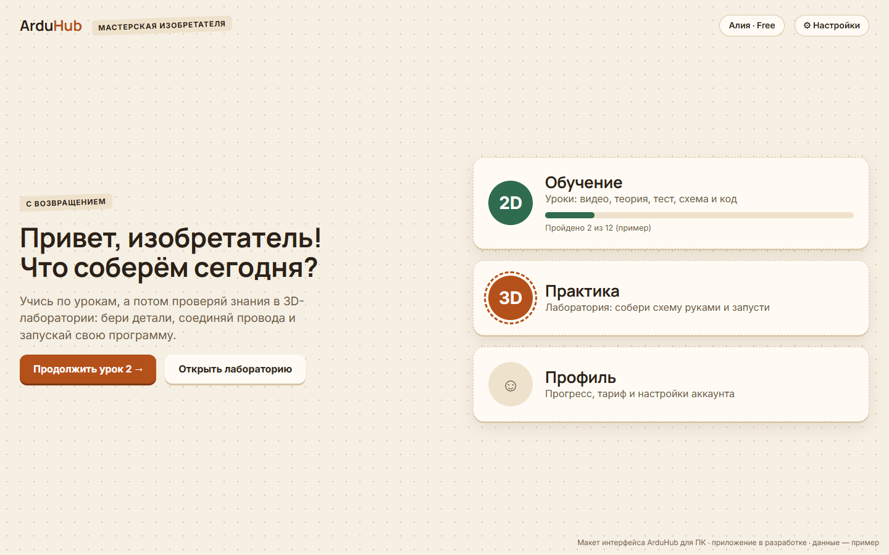
Главное меню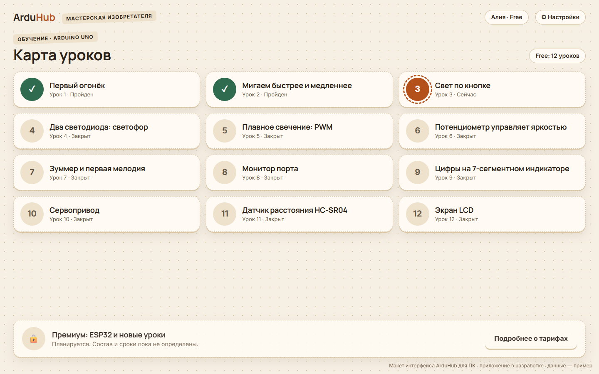
Карта уроков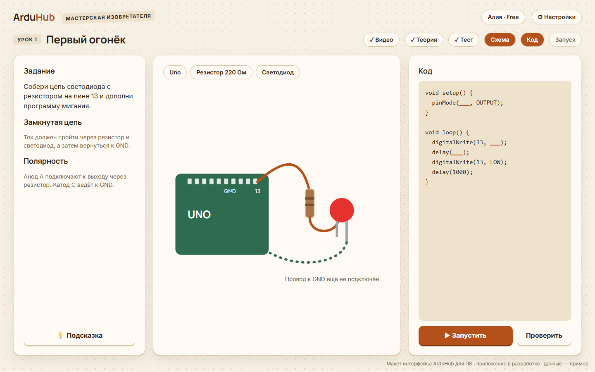
Урок: схема и код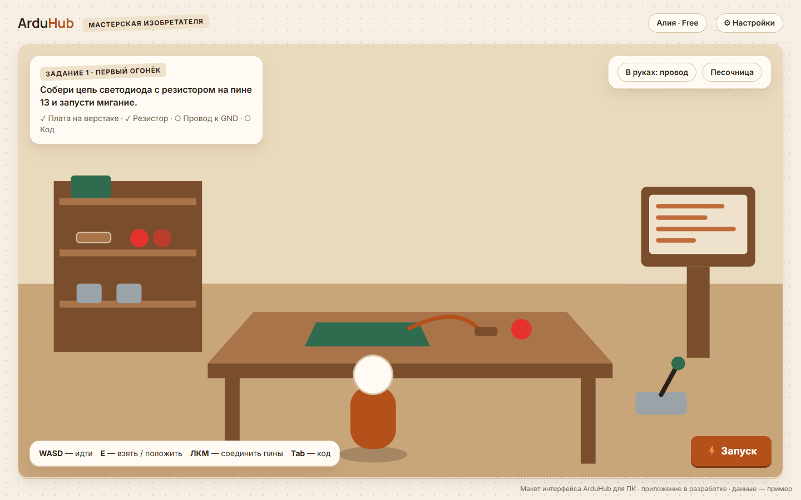
3D-практикаНочная лаборатория
Тёмная лаборатория: светящиеся провода, неон и экраны осциллографов.
3D: Тёмные гладкие поверхности, эмиссивные провода и светодиоды, bloom-свечение.
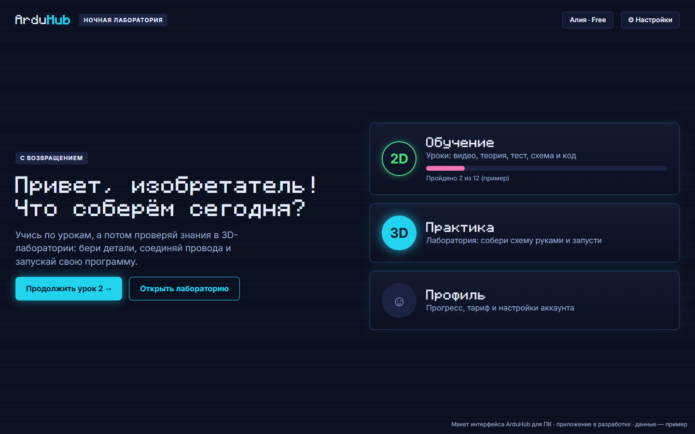
Главное меню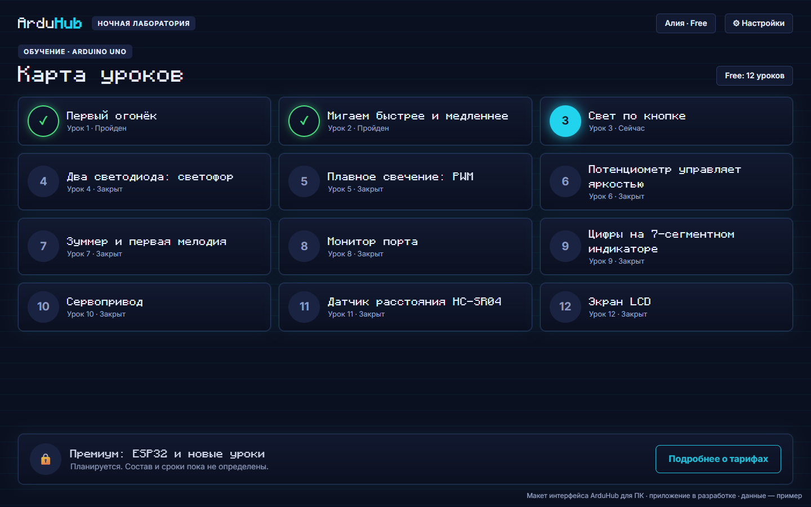
Карта уроков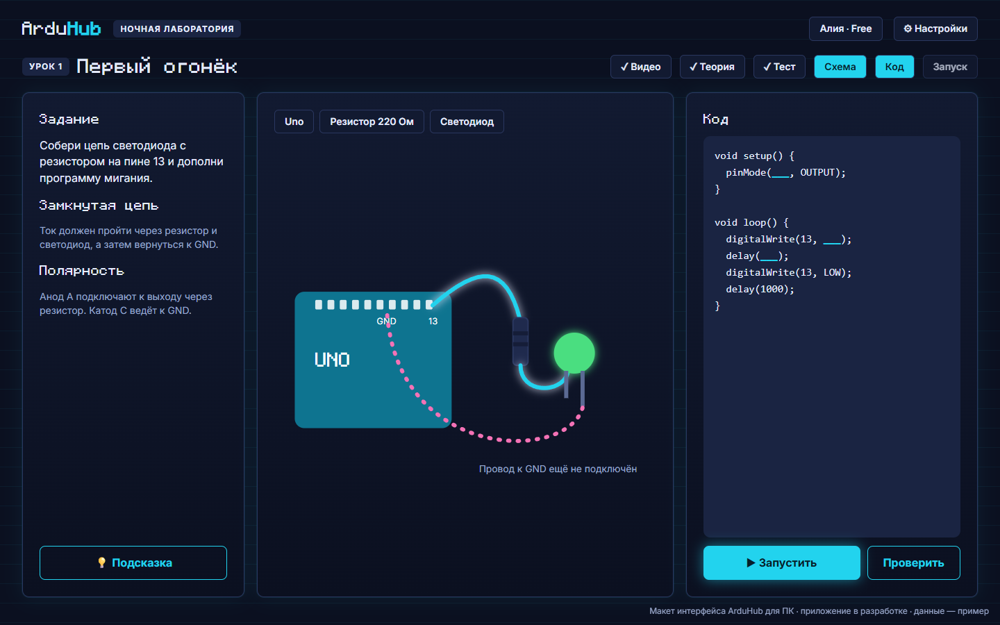
Урок: схема и код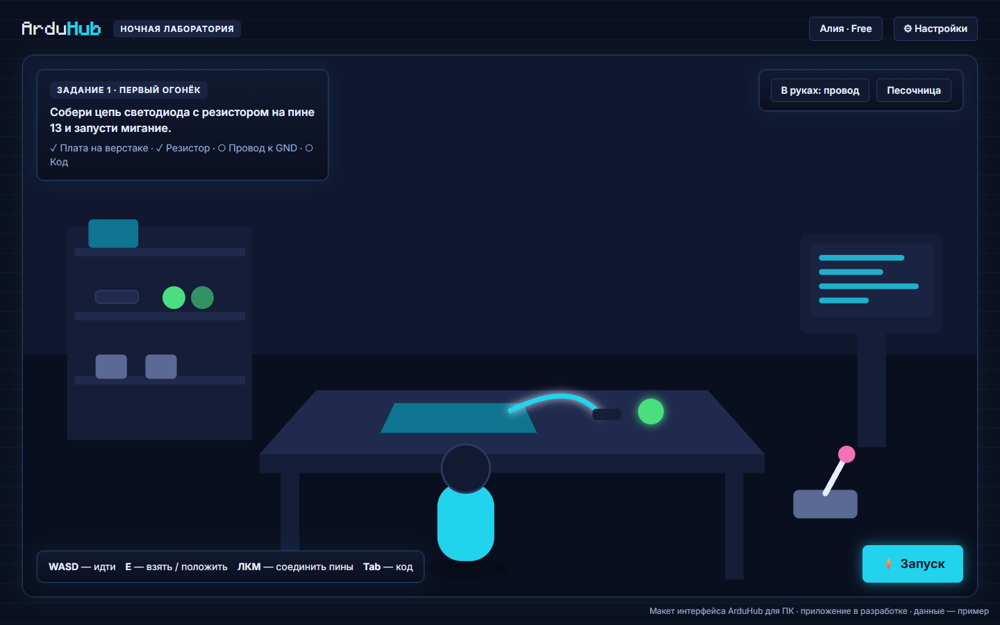
3D-практикаЯркий конструктор
Сочный конструктор: крупные формы, толстые контуры и игрушечный пластик.
3D: Пластиковый low-poly: скруглённые детали, чистые цвета, контурная обводка (outline-шейдер).
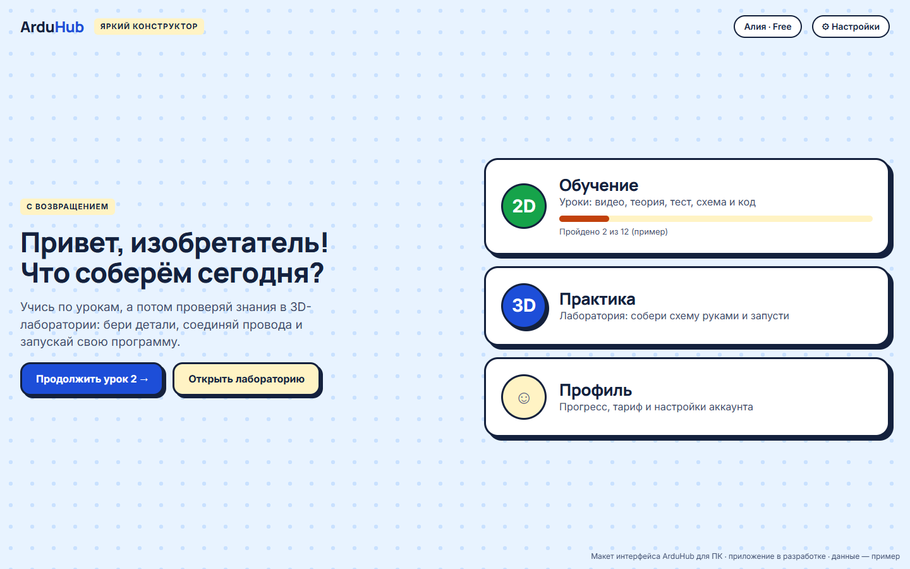
Главное меню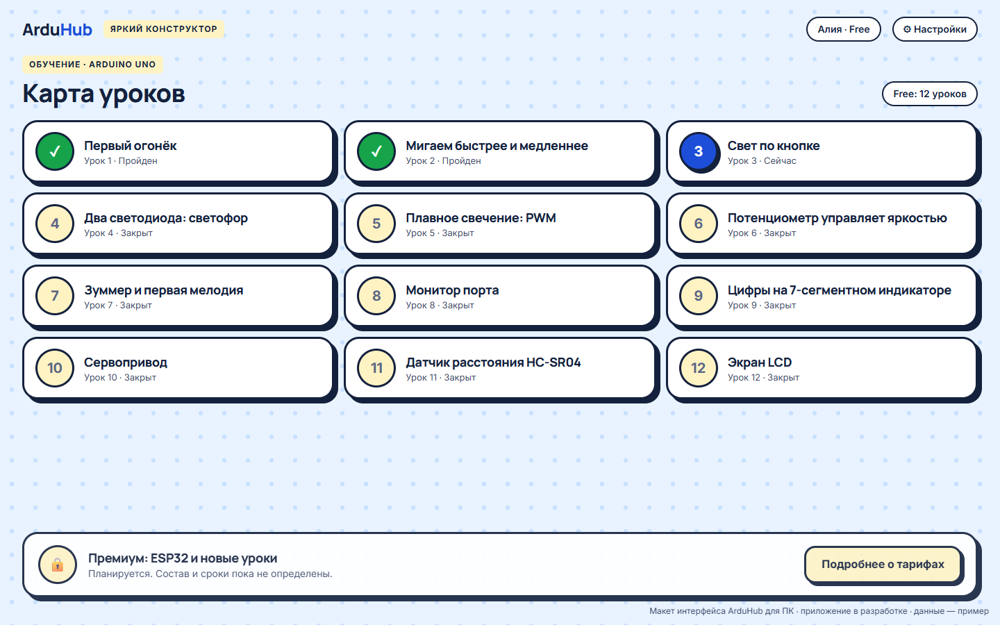
Карта уроков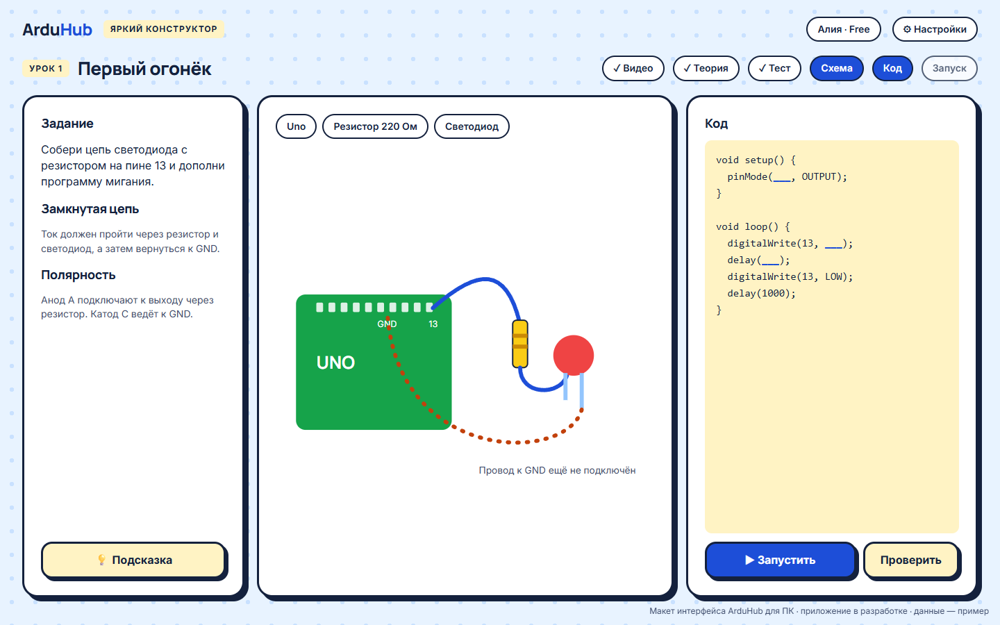
Урок: схема и код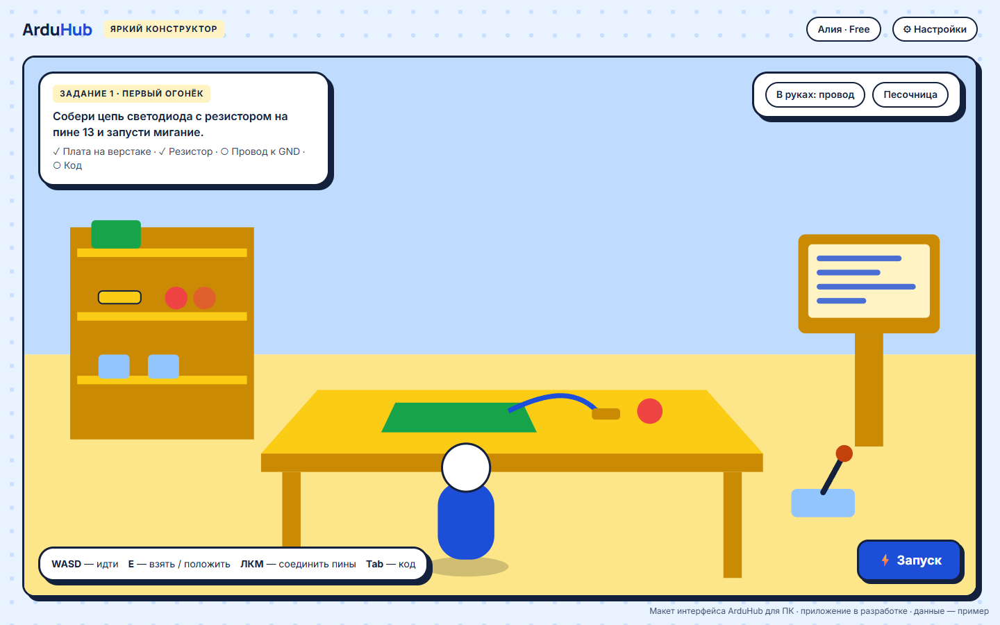
3D-практика